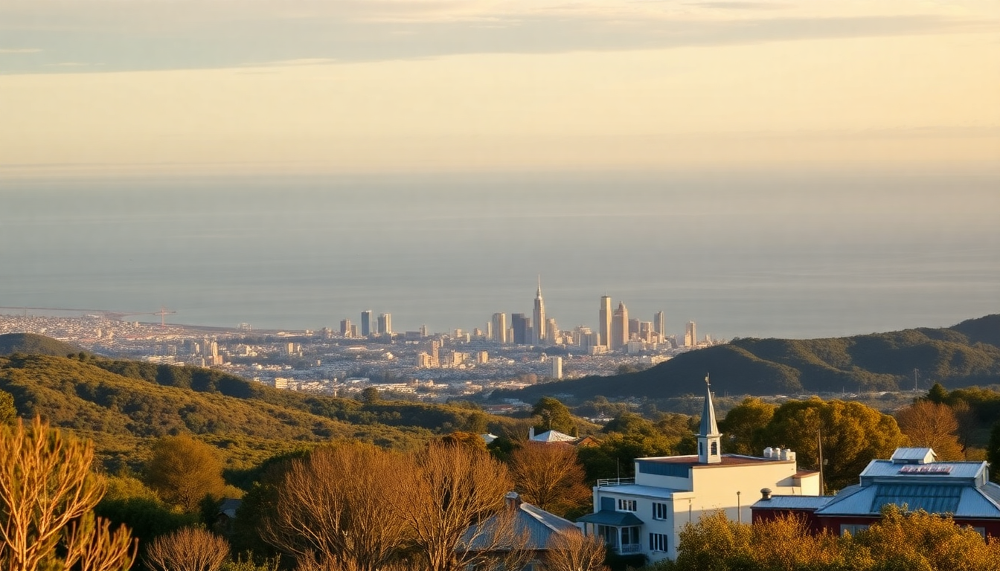

Where to Stay in Melbourne: Best Neighborhoods for Every Budget

I’ve spent the better part of a month bouncing between Melbourne neighborhoods, testing hotels, and eating my way through laneways. The city doesn’t have one “best” area—it has about seven, each with a totally different vibe and price tag. Here’s where I’d actually stay, broken down by what you’re trying to spend.
What is the best neighborhood for first-time visitors on a mid-range budget?
If you’ve never been to Melbourne and want to be in the thick of it without blowing your budget, I’d point you toward the CBD or Southbank. The CBD is walkable to most major sights—Flinders Street Station, Federation Square, the laneways with street art—and you’ll find solid mid-range hotels that don’t feel like shoeboxes.
I stayed at Adina Apartment Hotel Melbourne on Flinders Street and liked the kitchenette for quick breakfasts. For something a step up, The Victoria Hotel is a classic choice with a great location near Bourke Street Mall. On Southbank, Crown Metropol has a pool and casino access, but it’s louder on weekends.
- CBD: Best for walkability. Hotels like Adina Apartment Hotel and The Victoria Hotel sit around $150–$250 AUD per night.
- Southbank: Quieter at night, but still central. Crown Metropol and Quay West Suites are solid picks for $200–$300 AUD.
- Pro tip: Avoid hotels directly above the train lines on Flinders Street if you’re a light sleeper—the trams rumble until midnight.
Where should budget travelers and backpackers stay?
For under $100 AUD a night, you’re looking at hostels or budget hotels in Fitzroy or St Kilda. These neighborhoods are a short tram ride from the CBD but have their own character—and cheaper beds.
In Fitzroy, I crashed at The Nunnery, a converted convent that’s now a backpacker hostel. It’s quirky, clean, and a 10-minute tram to the city. For a private room, Fitzroy Inn offers basic doubles around $90 AUD. St Kilda is better if you want beach access and nightlife. Base Backpackers St Kilda is a party hostel, but The Prince has private rooms that are decent value.
- Fitzroy: The Nunnery (dorms from $35 AUD), Fitzroy Inn (private rooms from $90 AUD).
- St Kilda: Base Backpackers (dorms from $30 AUD), The Prince (private rooms from $120 AUD).
- Transport: Tram route 96 or 16 from St Kilda to the CBD takes about 20 minutes.
What is the best neighborhood for a luxury or romantic stay?
If you’re splurging—maybe a honeymoon or anniversary—skip the CBD and head to South Yarra or the Docklands. South Yarra feels more refined, with tree-lined streets, boutique shopping on Chapel Street, and access to the Royal Botanic Gardens.
I booked a weekend at The Olsen in South Yarra, part of the Art Series hotels. The rooms are spacious, the rooftop pool is quiet, and you’re a 10-minute walk from the gardens. For something with water views, Marriott Melbourne Docklands is polished but a bit isolated—you’ll need the free tram or a taxi to get to restaurants.
- South Yarra: The Olsen ($300–$500 AUD), The Lyall Hotel (suites with kitchenettes).
- Docklands: Marriott Melbourne Docklands ($350–$600 AUD), Pan Pacific Melbourne (harbor views).
- Romance tip: Book dinner at Attica in Ripponlea (30-minute tram) if you can snag a reservation—it’s worth the splurge.
Which neighborhood is best for foodies and nightlife?
Fitzroy and Collingwood are the epicenter of Melbourne’s dining and bar scene. Brunswick Street in Fitzroy is packed with hole-in-the-wall restaurants, craft beer bars, and late-night spots. I don’t think I ate a single bad meal there.
For dinner, Transformer in Fitzroy does excellent vegetarian food in a converted industrial space. For drinks, The Everleigh in Fitzroy serves top-shelf cocktails in a speakeasy setting. Collingwood’s Smith Street has a grittier edge—try Proud Mary for breakfast and The Tote for live music.
- Fitzroy: Transformer (dinner), The Everleigh (cocktails), Naked for Satan (rooftop bar).
- Collingwood: Proud Mary (breakfast), The Tote (live punk), Smith Street for vintage shopping.
- Budget note: Dinners in Fitzroy run $20–$40 AUD per main; Collingwood is slightly cheaper.
Where should families stay in Melbourne?
Families need space, kitchens, and proximity to parks. Southbank and Richmond are my top picks. Southbank has apartment-style hotels near the Yarra River and the Royal Botanic Gardens, which is perfect for letting kids run around.
I stayed at Quest Southbank with my niece and nephew—the two-bedroom apartment had a full kitchen and a washing machine, which was a lifesaver. Richmond is quieter and more residential, with Richmond Hill Hotel offering family rooms near the MCG and Melbourne Park. The Melbourne Zoo is a short tram ride from both areas.
- Southbank: Quest Southbank (apartments from $250 AUD), Crown Promenade (family suites).
- Richmond: Richmond Hill Hotel (family rooms from $180 AUD), Punthill Richmond (serviced apartments).
- Kid-friendly activity: The Melbourne Zoo tram from Southbank takes 15 minutes.
What is the best neighborhood for a quiet, local experience?
Brunswick and Northcote are where actual Melburnians live—not tourists. These northern suburbs have a laid-back, multicultural vibe with excellent markets and cafes. You’ll trade convenience for authenticity, but the tram ride to the CBD is only 20 minutes.
I spent a week in Brunswick and loved the Brunswick East area. The Baxley is a boutique hotel with a garden courtyard, and A1 Bakery on Sydney Road serves the best Lebanese flatbreads I’ve ever had. Northcote’s High Street is full of independent bookstores and wine bars—try Binky’s for natural wine.
- Brunswick: The Baxley (rooms from $150 AUD), A1 Bakery (budget eats).
- Northcote: Binky’s (wine bar), Northcote Theatre (live shows).
- Market tip: Brunswick Market on Sundays is great for vintage finds and street food.
FAQ
Is it better to stay in the CBD or a suburb like Fitzroy? It depends on your priorities. The CBD is most convenient for first-time visitors—everything is walkable, and you’re near Flinders Street Station for trains to other parts of Victoria. Fitzroy is better if you want nightlife, food, and a local vibe, but you’ll rely on trams (route 11 or 96) to get to major sights. I’d pick the CBD for a short trip (2-3 days) and Fitzroy for a longer stay.
What is the cheapest neighborhood for accommodation in Melbourne? St Kilda and Brunswick consistently have the lowest prices for both hostels and budget hotels. In St Kilda, you can find dorms under $40 AUD and private rooms under $120 AUD. Brunswick offers similar rates but feels less touristy. Avoid South Yarra and the Docklands if you’re on a tight budget—rooms there start around $200 AUD.
How do I get around Melbourne without a car? The free City Circle Tram covers the CBD and Docklands, and the Myki card works on all trams, trains, and buses. For neighborhoods like Fitzroy, St Kilda, or Brunswick, tram routes run frequently until midnight. I used the PTV app to plan trips—it’s more reliable than Google Maps for real-time arrivals. Ride-shares like Uber are easy but cost $15–$25 AUD for a 15-minute trip.
Conclusion
- First-time visitors on a mid-range budget should stay in the CBD or Southbank for walkability and central access.
- Budget travelers will find the best deals in Fitzroy (hostels) or St Kilda (backpackers and cheap private rooms).
- Luxury seekers should book South Yarra or the Docklands for quiet, upscale stays.
- Foodies and nightlife fans belong in Fitzroy and Collingwood—Brunswick Street is non-stop.
- Families need the apartment-style hotels in Southbank or Richmond for space and kitchens.
- Local experiences live in Brunswick and Northcote, where you’ll find markets and cafes without crowds.